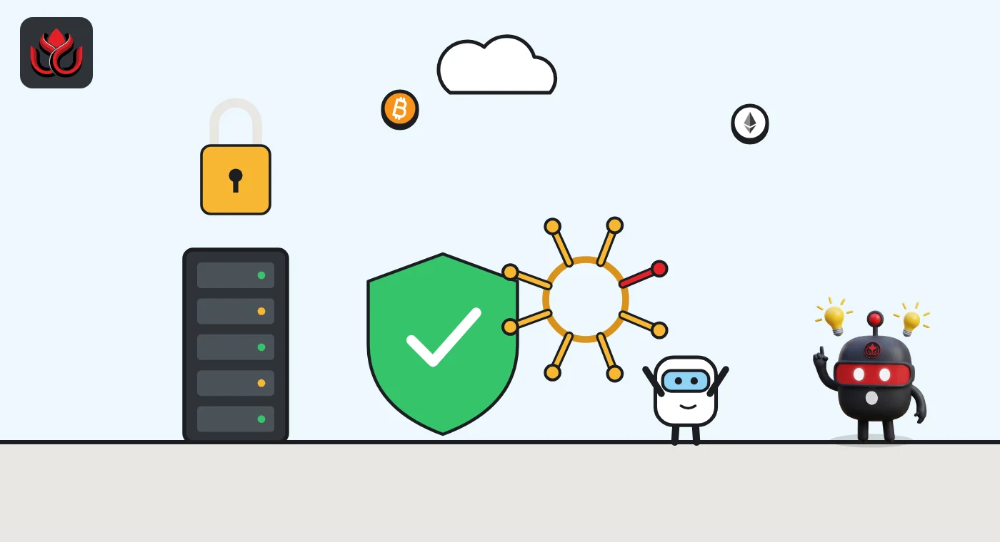

Rumor vs record: was Chainalysis hit by AI, and did attackers see case files?
Claims about the Chainalysis breach kept spreading as the company posted its November 6 update. We checked eight of them against Chainalysis's own incident page: two are wrong or out of date, and two have no evidence behind them yet.
Key points
- Chainalysis did say an outside actor used "offensive agentic techniques" to get into its systems, so the AI angle has a basis in its own words.
- "Only names and emails leaked" is out of date. Since November 4, Chainalysis says names, usernames, password hashes and live tokens for all users were exposed.
- Chainalysis says it has no evidence that investigations data was accessed or attribution data changed. Reactor was still offline in its 3:30 a.m. ET update on November 6, while KYT began a phased return.
Rumor vs record
| What is going around | Verdict | What the record shows |
|---|---|---|
| "Chainalysis was breached in an AI-driven attack." | Partly true | Chainalysis wrote that an external actor used "offensive agentic techniques" to gain access. It has not published details of the tools or how much was automated. Source |
| "Investigator names and roles were exposed." | True | The October 30 post listed user IDs, full names, email addresses and organization role labels for provisioned users. Source |
| "Only customer names and emails leaked." | Misleading | That was the first account. On November 4 at 11:00 p.m. ET, Chainalysis said names, usernames, password hashes and live tokens for all its users were exposed. Source |
| "Passwords leaked." | Partly true | On November 4 Chainalysis said an on-path attack exposed a subset of customer passwords, since contained, and later that password hashes for all users were exposed. All users must reset passwords. Source |
| "The hackers got Chainalysis case files." | Unverified | Chainalysis says it has found no evidence that investigations data was accessed. Its Reactor investigations tool remains offline and no later findings were posted. Source |
| "Attackers could rewrite which wallets belong to whom." | Unverified | Chainalysis says it found no evidence that attribution data was manipulated. Source |
| "This breach is linked to the Binance hack." | Wrong | Chainalysis said in its first post that the incident is unrelated to the Binance theft. We found no official record linking the two. Source |
| "Chainalysis is down." | Partly true | As of 3:30 a.m. ET on November 6, KYT and Address Screening were returning in phases for allowlisted customers. Reactor and Data Solutions were still offline, with no date given. Source |
Why we did this check
Chainalysis sells the blockchain tracing tools that police, regulators and exchanges use to follow stolen and sanctioned money. A breach there worries far more people than its own customers, so every update on its incident page set off a new round of posts. Some repeated the first, smaller account long after Chainalysis had widened it. We checked the claims only against that page, which the company has updated five times since October 30, 2026.
What changed on November 6
In its latest update, at 3:30 a.m. ET on November 6, Chainalysis said it had begun restoring KYT, its transaction monitoring product, and Address Screening in phases. Customers must send trusted IP addresses for an allowlist, then reset passwords and rotate API keys before they start sending transactions again.
Reactor, the investigations app, and Data Solutions stay offline while outside experts help harden the systems. Chainalysis gave no return date. None of its updates mention stolen crypto or customer funds.

What we will watch
A date for Reactor's return, any finding on investigations data, and whether Chainalysis says more about how the attacker got in. Our earlier story on the November 4 update is here.
LC Insight analysis
This section is our reading of the facts above, not a statement of fact.
- We think the most important correction is the scope. Posts that still say "only names and emails" understate a breach that, by Chainalysis's own account, reached login tokens for every user. The "case files" and "Binance link" claims go the other way, and nothing on the record supports them.
- The AI angle is real but thin. Chainalysis used the phrase "offensive agentic techniques" and has said nothing about the tools or how much was automated.
- For customers, the practical news is the restart checklist: trusted IP addresses for the allowlist, new passwords and rotated API keys before KYT traffic resumes.
What's next
- A return date for Reactor and Data Solutions
- Any finding on investigations or attribution data
- More detail on the "agentic" intrusion
Disclaimer. This article is based on public information and the sources listed below as of the update time shown. It is for information only and is not investment, legal or tax advice. Figures may change as companies and authorities publish new data.